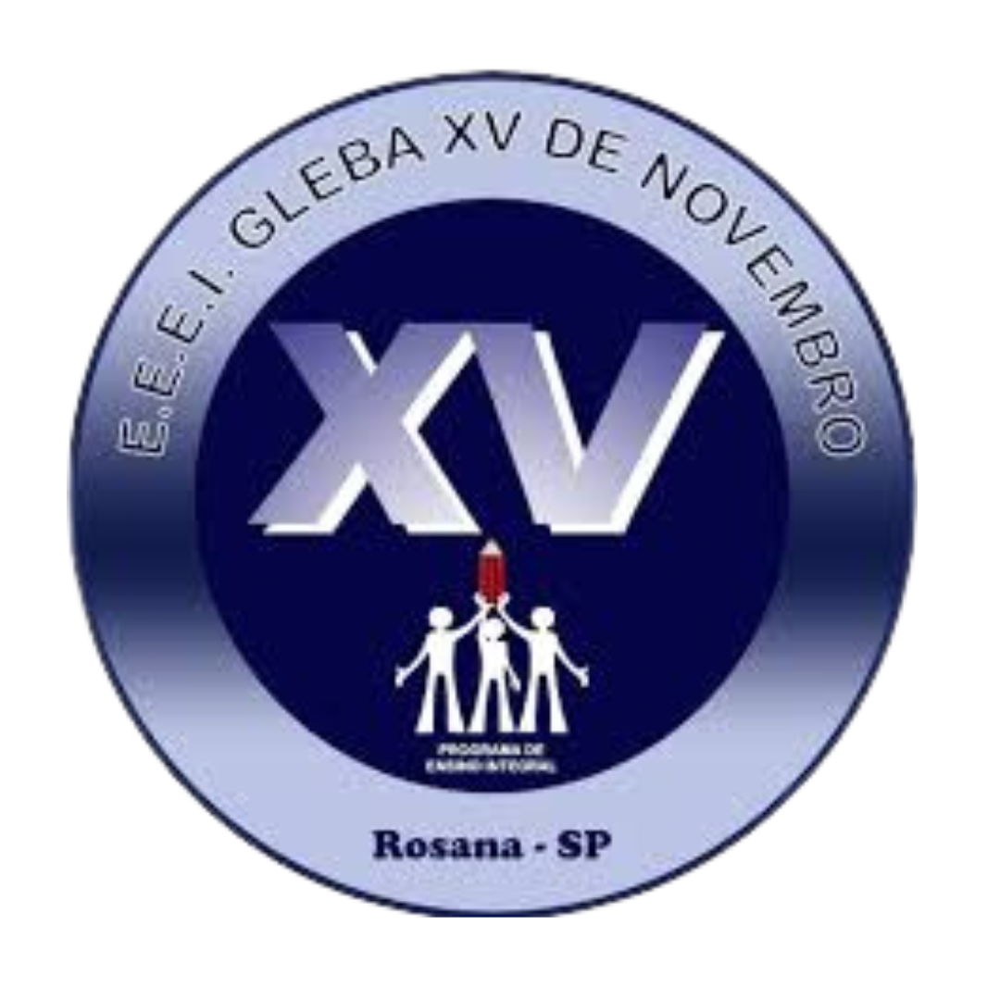

<html lang="pt-BR"></html>

<head>
    <div class="nome-site">
    <link rel="stylesheet" href="styles.css">
    <link rel="preconnect" href="https://fonts.googleapis.com">
    <link rel="preconnect" href="https://fonts.gstatic.com" crossorigin>
    <link
        href="https://fonts.googleapis.com/css2?family=Chakra+Petch:ital,wght@0,300;0,400;0,500;0,600;0,700;1,300;1,400;1,500;1,600;1,700&display=swap"
        rel="stylesheet">
    <title>E.E.E.I. Gleba XV de Novembro</title>
    </div>

      
</head>

<body>
    <div>
        <header>
            E.E.E.I. Gleba XV de Novembro
        
        <div class="contato">
            <p class="contato">Email: <a href="mailto:e903620a@educacao.sp.gov.br">e903620a@educacao.sp.gov.br</a></p>
            <p class="contato">Telefone: (18) 3288-8301/3288-8302</p>
        </div>
        </header>
    </div>
    
    <section class="chamada-branco">
        <div class="conteudo">
            <div class="imagem">
                
                
                                
            </div>
            <div class="texto-simples">
                <p>É de suma importância atividades antirracista na escola. O Dia da Consciência Negra é uma data para que possamos conscientizar toda a comunidade escolar a combater práticas racistas. </p>
<p>Claro que uma postura contra o racismo não deve ocorrer apenas no dia 20 de novembro, mas deve pautar nossas vidas durante todos os dias do ano. Isso porque devemos sempre nos lembrar de que a condição atual do Brasil é resultado de mais de 300 anos de escravidão, o que moldou costumes e práticas do brasileiro e tornou o racismo e a hierarquização marcas inerentes à nossa sociedade. </p>
<p>A discriminação e o preconceito são doenças que destroem a alma da sociedade, impedindo-nos de ver a beleza na diversidade. Unidos pela diversidade étnica podemos construir um mundo onde o respeito e a empatia prevalecem sobre o preconceito e a discriminação. Assim, a proposição desta gincana justifica-se pelo fato de que injúria racial e preconceito ferem e precisamos combatê-los. </p>
<p>No dia 5 de novembro, a E.E.E.I. Gleba XV de Novembro promoveu um evento especial em comemoração ao mês da Consciência Negra. A atividade foi realizada em formato de gincana, reunindo alunos, professores e toda a comunidade escolar em uma celebração enriquecedora da cultura afro-brasileira e da importância do respeito à diversidade. </p>
<p>A gincana incluiu cinco provas, que incentivaram a expressão criativa e o entendimento cultural dos participantes: </p>

        </div>
    </section>

    <section class="chamada-branco">
        <div class="texto-simples">
            <h3>
                Clique para ver o vídeo
            </h3>
        </div>
        <div class="conteudo">
            <a href="https://youtu.be/ETYnUiXUAaE?si=ajYzZvKFuCKxyG7T" target="_blank">
                
            </a>
            
        </div>
    </section>

    <section class="chamada-branco">
        
            <div class="texto-simples">
                <p>1. Frase Inspiradora: As equipes foram convidadas a criar uma frase que representasse a importância da luta pela igualdade racial e o valor da cultura negra na sociedade. </p>
<p>2. Acróstico: Os alunos usaram suas habilidades poéticas para desenvolver acrósticos relacionados ao tema, reforçando palavras como "NEGRITUDE".</p>
<p>3. Cena Teatral: Em uma dramatização, cada equipe encenou uma situação sobre a valorização da cultura afro-brasileira, abordando temas como a resistência, a identidade e o legado cultural. </p>
<p>4. Poema: A atividade trouxe uma oportunidade para que os alunos compartilhassem, por meio da poesia, seus sentimentos e reflexões sobre o Dia da Consciência Negra. </p>
<p>5. Releitura de uma Obra de Arte: As equipes se inspiraram em obras de artistas afro-brasileiros para criar suas próprias interpretações, destacando o valor da arte como ferramenta de expressão e empoderamento. </p>
<p>O evento não apenas proporcionou uma atividade dinâmica e envolvente, mas também despertou nos alunos e na comunidade a reflexão sobre a importância do respeito e da valorização das diferentes etnias e culturas que formam o Brasil. Com criatividade e entusiasmo, todos puderam vivenciar e reconhecer o papel fundamental da cultura negra em nossa sociedade. </p>
<p>O júri foi composto pelas professoras Anlene (Anos Iniciais); Giovanna (Anos Finais); Vanessa (Ensino Médio); Clotildes (Gestão turno I); Jonathas (Gestão da área de ciências humanas); Maria Eduarda (Agente de Organização); </p>
<p>Os demais professores orientaram as equipes. </p>
                
            <div class="imagem">
                
                
                
                
                
                
            </div>
        </div>
    </section>
    

</body>

</html>